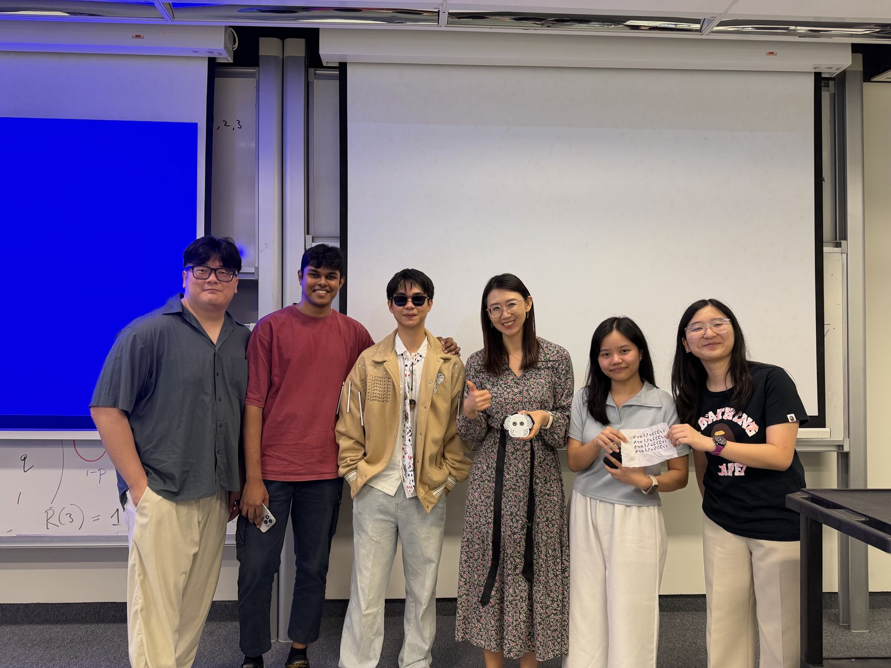
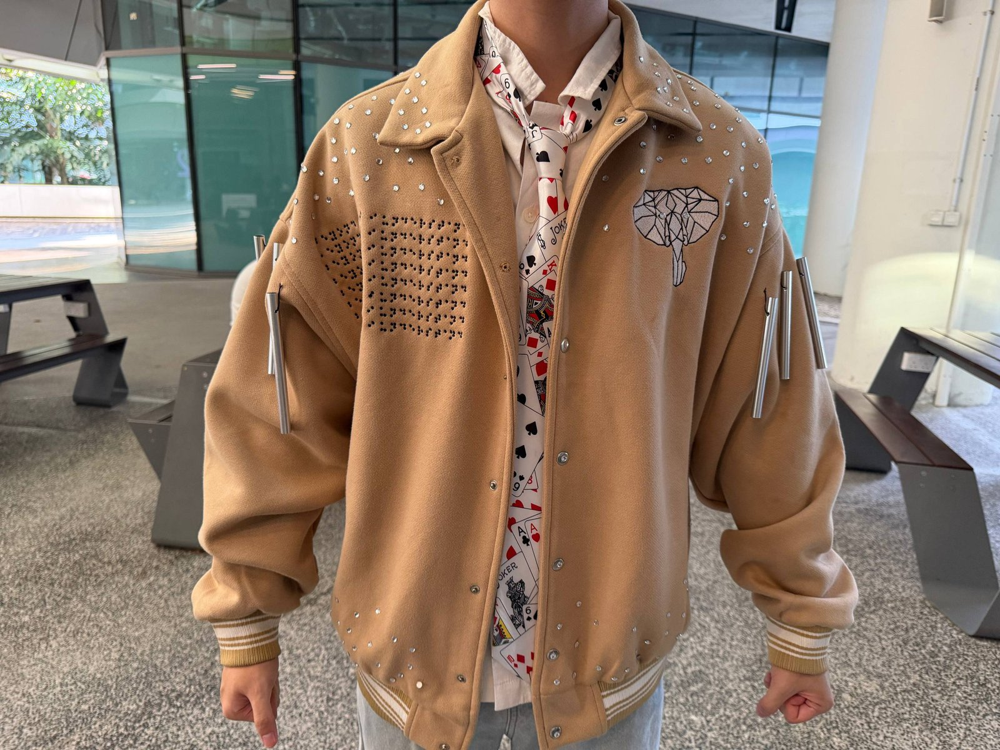
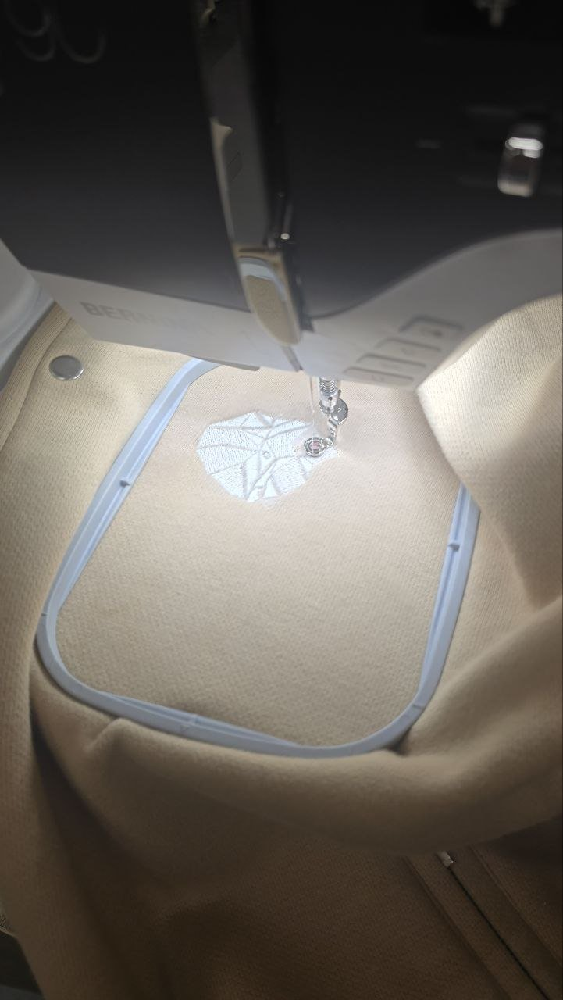

A fashion innovation for the blind community
Project by Audrey, Hillary, Davin, Srihari, Jarrod
The fashion industry designs for those who can see. Everyone else is left out.
Can't independently style their own outfits. They're unable to express themselves.
Adaptive fashion exists only for physical disabilities. No design exists for sensory disabilities.
*data from WHO
Six blind men are curious about an elephant. Each touches a different part and describes it based on their own touch — the side feels like a wall, the trunk like a snake, the tusk like a spear, a leg like a tree, an ear like a fan, the tail like a rope. The men argue, and slowly convince each other.

When fashion is designed entirely around sight, we set out to answer this with a garment built on four ideas:

Each piece is intentional. Together, they form a complete identity statement.

"Beyond sight, I understand," embroidered on the front right panel. Sighted people see patterned dots; blind people read it by feel — durable, tactile, and searchable.
Diamond-clear stones hand-glued in a scattered, random pattern with textile glue. Light shifts and shines with movement — identity markers that stay visible regardless of disability.
A machine-embroidered geometric elephant, linking back to the story of the six blind men — a reminder that perspective matters, but truth is relative.
Metal chimes at the shoulder ring with movement, while an ESP32, ultrasonic sensor, and 0.96" display drive a tie-mounted speaker that plays a song when someone is detected nearby.
Not wearable technology, not smart clothing — technology here enhances aesthetics and communicative power. The braille dots become a tactile message and surface design; the chimes become a sound and visual statement.
Fashion carries cultural, social, and expressive meaning. The jacket communicates identity visually for sighted people, and tactilely and sonically for blind and deaf wearers — the same garment, read two ways.
"What joins the hand and the machine is the heart." — Karl Lagerfeld. The emblem and braille dots are machine-embroidered for precision; the gemstones and sensor casing are hand-crafted.
These features aren't only for the jacket. Each is designed to live on anything.
Embroidered on garments, accessories, straps & bands — flat or curved surfaces.
Rhinestones & crystals applied to textile or hard surfaces for a personalised visual presence.
Chimes, speakers & vibration components integrated into buckles, cuffs, hems, or strap hardware.
Fashion has always been about being seen.
But how about with them who are unable to see?